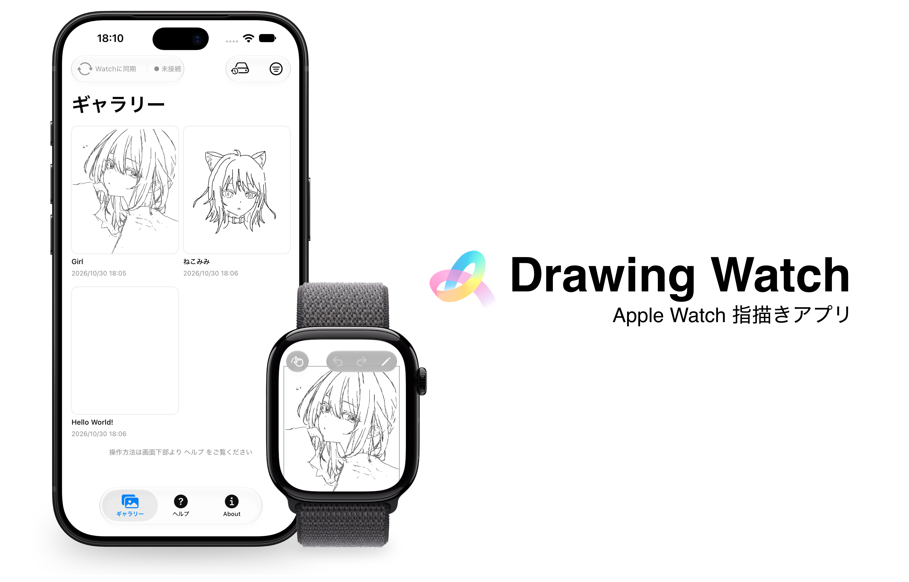
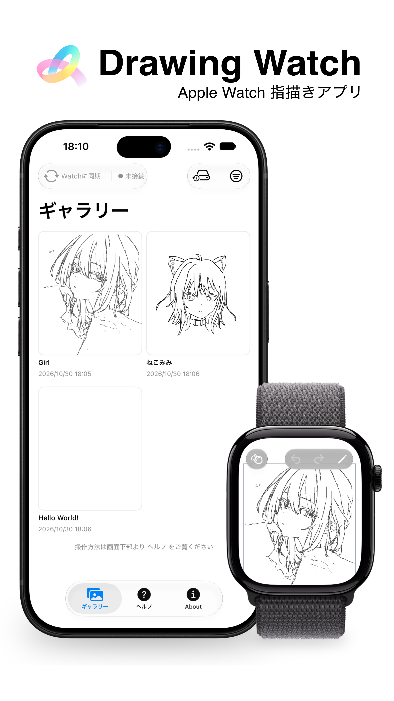

I'm sorry, but the English images are currently being prepared.
Bookmark this website to keep up with the latest news!
Drawing Watch is a finger-drawing app for Apple Watch, created with the goal of making it possible to create doujinshi-level artwork right on your Apple Watch.
Drawing Watch is built around three core ideas.
I believe that creative inspiration can strike at any moment.
But have you ever had a great idea disappear simply because you didn't have your iPad or pen display nearby? Or because turning on your drawing device felt like too much effort? Maybe even starting up your smartphone seemed like a hassle.
If that inspiration hadn't faded away, you might have created something wonderful.
That's why I turned my attention to the Apple Watch, a device that most of us wear for almost the entire day.
If you can draw on this device, it can be there to capture your creative inspiration wherever you are - even when you're sitting on the toilet.
No matter how wonderful your inspiration may be, what happens if the tools you use to draw are frustrating?
Well, you'd probably end up giving up on drawing.
That's why Drawing Watch pushes usability to its limits, even within the tiny screen of an Apple Watch.
I'll introduce the features that make this possible later on.
In recent years, a curious group of artists has emerged on platforms such as X (formerly Twitter): elementary school students who create digital art using nothing but their smartphones and fingers.
They're incredibly young, yet they produce remarkably sophisticated digital illustrations - so good that I can't help feeling jealous.
Even if we tried to compete with them under the same conditions, there's one thing we could never beat them at: age.
So, what's the one thing we can compete with them on?
That's right. Hardware.
Why not try drawing on a canvas that's no larger than 49mm - an Apple Watch?
For more about how I came up with this idea and started developing the app, check out the message from the developer on the App Information page. I hope you'll give it a read!
Drawing Watch is the first app for drawing directly on Apple Watch to support canvas zooming and panning.*1
This allows you to work on a large canvas and add fine details, even on the tiny screen of your Apple Watch.
Drawing Watch lets you change the color of your strokes.
Use your favorite colors to completely transform the look and feel of your artwork.
(Fill tools are planned for a future update. Please stay tuned!)
Perhaps the biggest feature of Drawing Watch is that there's an iPhone app, too!
Once your artwork is transferred from your Apple Watch to the Drawing Watch app on your iPhone, you can manage it in the Gallery.
There, you can:
PNG is supported by almost every service out there, while SVG lets you display your artwork at large sizes without losing image quality.
This means you can take artwork created on your Apple Watch and share it with the world - straight from your wrist!
You can also use the Backup feature to export all your artwork as a JSON file and store it somewhere safe, such as external storage.
(While working on an artwork for a doujinshi I was participating in, I accidentally deleted all my data and was devastated. PLEASE, PLEASE BACK UP YOUR ARTWORK!!!!)
Drawing Watch makes it easy to draw clean rectangles and circles.
As long as you have enough storage space, you can keep editing all your previous artwork.
Unlike traditional art tools and some illustration software, you don't have to worry about the pressure of "getting it right the first time."
Create freely, make changes whenever you like, and keep refining your artwork for as long as you want.